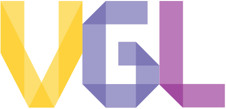
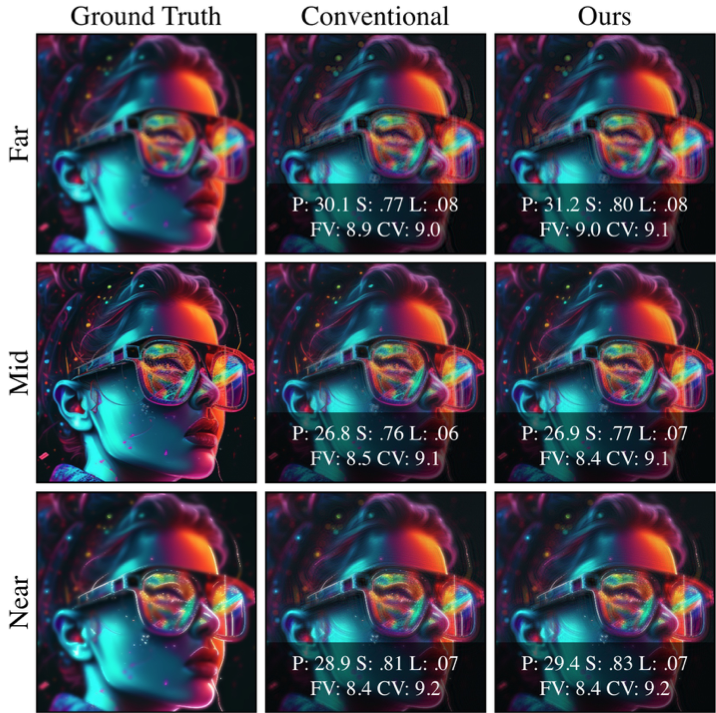
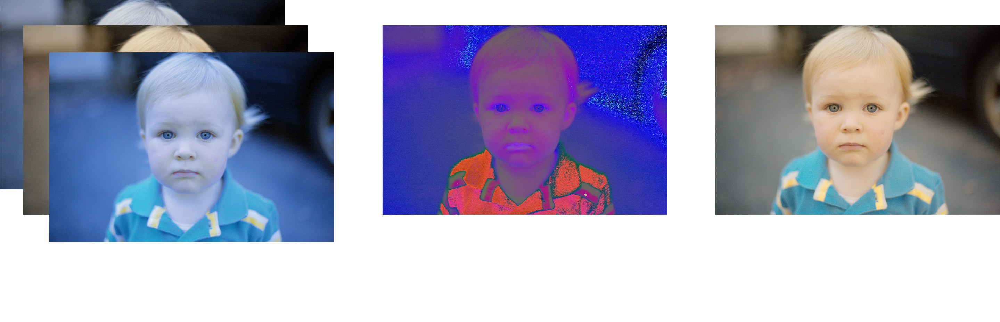
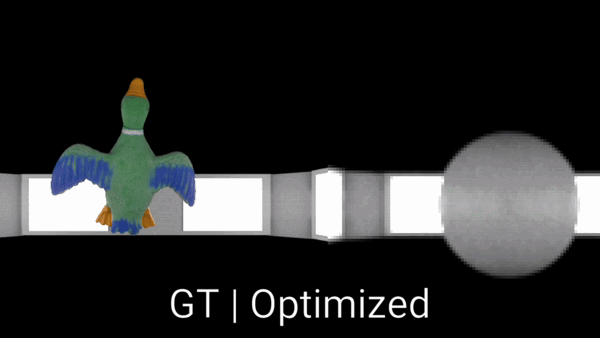
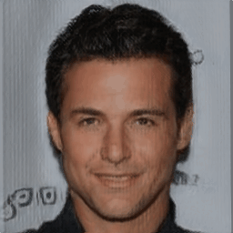

Doğa Yılmaz
I am a PhD student in the VECG group at University College London (UCL), advised by Assoc. Prof. He Wang and Prof. Tobias Ritschel. My research focuses on computer graphics and computational physics, particularly advancing physics-informed neural rendering techniques.
News
March 2025: Awarded a scholarship by the Rabin Ezra Scholarship Trust to support my research.
October 2024: Started my PhD at UCL!
Education
PhD in Computer Science
University College London
Department of Computer Science
Supervisor: Assoc. Prof. He Wang
October 2024 - Present
University College London
Department of Computer Science
Supervisor: Assoc. Prof. He Wang
October 2024 - Present
MSc in Artificial Intelligence
Özyeğin University
Graduate School of Science and Engineering
Supervisor: Assoc. Prof. Furkan Kıraç
February 2021 - October 2023
Özyeğin University
Graduate School of Science and Engineering
Supervisor: Assoc. Prof. Furkan Kıraç
February 2021 - October 2023
BSc in Computer Science
Özyeğin University
Department of Computer Science
Supervisor: Assoc. Prof. Furkan Kıraç
September 2016 - September 2020
Özyeğin University
Department of Computer Science
Supervisor: Assoc. Prof. Furkan Kıraç
September 2016 - September 2020
Experience

Computer Vision Research Engineer
Fishency Innovation
Stavanger, Norway
Manager: Furkan Kıraç
August 2022 - January 2025
Fishency Innovation
Stavanger, Norway
Manager: Furkan Kıraç
August 2022 - January 2025
Research Intern
UCL Computational Light Laboratory (CLL)
London, UK
Supervisor: Assoc. Prof. Kaan Akşit
November 2023 - October 2024
UCL Computational Light Laboratory (CLL)
London, UK
Supervisor: Assoc. Prof. Kaan Akşit
November 2023 - October 2024

Research & Teaching Assistant
Özyeğin University Vision and Graphics Laboratory (VGL)
Istanbul, Turkey
Supervisor: Assoc. Prof. Furkan Kıraç
July 2019 - October 2023
Özyeğin University Vision and Graphics Laboratory (VGL)
Istanbul, Turkey
Supervisor: Assoc. Prof. Furkan Kıraç
July 2019 - October 2023
Publications

Role
of Perceptually Guided Image Quality Metrics in Computer-Generated Holography
Doğa Yılmaz, Rafal Mantiuk, Kaan Akşit
SPIE Advances in Display Technologies XV, 2025
Doğa Yılmaz, Rafal Mantiuk, Kaan Akşit
SPIE Advances in Display Technologies XV, 2025

DeNIM:
Deterministic Neural Illuminant Mapping for Efficient Auto-White Balance Correction
Furkan Kınlı, Doğa Yılmaz, Barış Özcan, Furkan Kıraç
IEEE ICCV Workshop on Resource Efficient Deep Learning for Computer Vision, 2023
Furkan Kınlı, Doğa Yılmaz, Barış Özcan, Furkan Kıraç
IEEE ICCV Workshop on Resource Efficient Deep Learning for Computer Vision, 2023

Illumination-guided
inverse rendering benchmark: Learning real objects with few cameras
Doğa Yılmaz, Furkan Kıraç
Computers & Graphics, 115, 107-121
Doğa Yılmaz, Furkan Kıraç
Computers & Graphics, 115, 107-121
Modeling
the Lighting in Scenes as Style for Auto White-Balance Correction
Furkan Kınlı, Doğa Yılmaz, Barış Özcan, Furkan Kıraç
IEEE/CVF Winter Conference on Applications of Computer Vision (WACV), 2023
Furkan Kınlı, Doğa Yılmaz, Barış Özcan, Furkan Kıraç
IEEE/CVF Winter Conference on Applications of Computer Vision (WACV), 2023

[Re] Lifting 2D StyleGAN for 3D-Aware Face
Generation
Doğa Yılmaz, Furkan Kınlı, Barış Özcan, Furkan Kıraç
ReScience C, 8(2), 2022, Presented at NeurIPS 2022 Journal Track
Doğa Yılmaz, Furkan Kınlı, Barış Özcan, Furkan Kıraç
ReScience C, 8(2), 2022, Presented at NeurIPS 2022 Journal Track